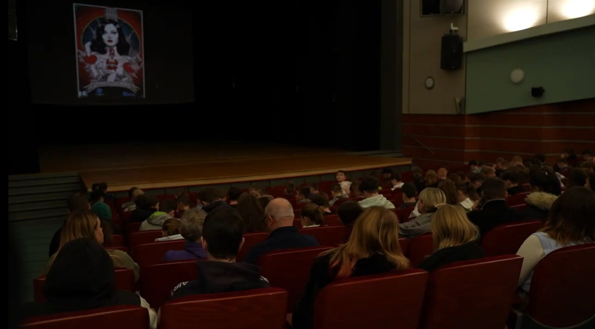
Erasmus+ Youth Exchange · Project story
Art Meets AI: Exploring New Forms of Performance
“In the symphony of progress, AI is the instrument that amplifies human creativity.” — ChatGPT-4, our director
- Show
- 3 January 2024
- Where
- Krosno, Poland
- Who
- 28 participants
- From
- Poland, Romania, Slovakia, Czech Republic
- Audience
- 600+ students and teachers
01
About the show
ART Meets AI is a theatrical experiment born from an Erasmus+ youth exchange held in Krosno, Poland. Our group of 28 participants from Romania, Poland, Slovakia and the Czech Republic set out to create a show directed and enhanced by AI.
The project blends live action on stage with AI techniques including voice modulation, deepfakes, and generated images and music. We were proud to present it to 600 students and teachers from schools in Krosno. Using AI in theatre is also a powerful tool for non-formal education, giving interactive learning experiences that engage and inspire.
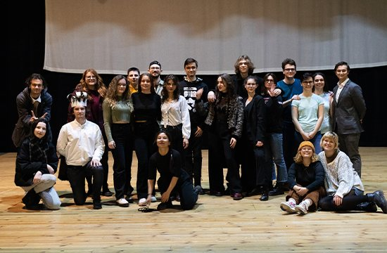
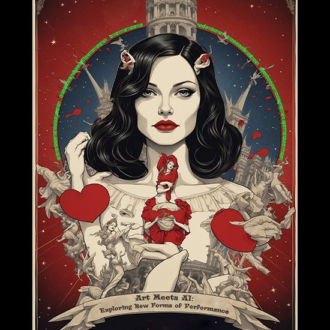
02
Snow White’s AI journey
The untimely death of Krosno’s King, caused by a high-tech self-driving car from Elon Musk, ignites a thrilling power struggle. The Evil Queen seizes the chance to push her twisted democracy, while Snow White, the grieving princess, fights back with the help of AI-enhanced allies.
As both sides fight a high-stakes battle of misinformation and manipulation, the story dives into the ethical complexities of technology and power. The play is also a tool for intercultural dialogue: its subject is not only AI, but democratic values and the dangers of disinformation.
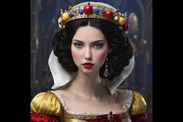
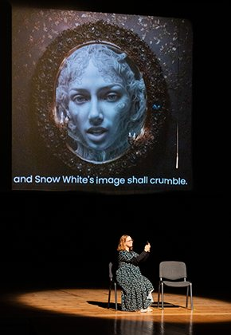
03
The AI narrator
Our story is presented and directed by the AI Narrator, who evolves from an old computer into the most advanced entity, one that ends up taking over our freedom and rights.
This is a kind of experiment: a controlled transfer of power to AI, to help people understand the potential impact of such tools on our reality.
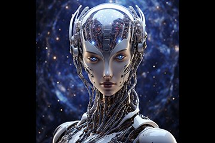
04
Enhanced with AI
We used more than 50 different AI tools: real-time voice modulation, deepfake technology, and AI-generated imagery and music. Through countless hours of rehearsals, tech setups and brainstorming, every element was crafted to strengthen the storytelling.
Curious how we did it? Our materials page explains every tool we used, from ChatGPT and Leonardo AI to D-ID and a retro Linux terminal, so you can do it too.
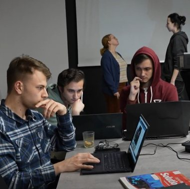
05
600+ in the audience
We invited over 600 students and teachers from schools around Krosno, which pushed us to levels we could only dream of. The schools that attended were:
- Zespół Szkół Ponadpodstawowych Nr 1 im. Jana Szczepanika w Krośnie
- Katolickie Liceum Ogólnokształcące im. ks. Br. Markiewicza z Oddziałami Mistrzostwa Sportowego
- Zespół Szkół Elektrycznych i Ogólnokształcących w Krośnie
- II Liceum Ogólnokształcące im. Konstytucji 3 Maja w Krośnie
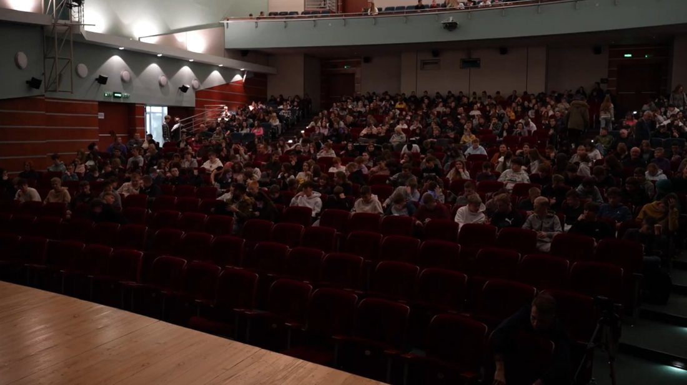
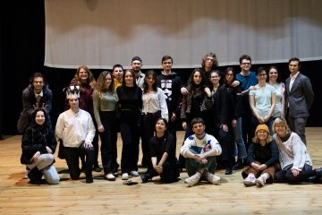
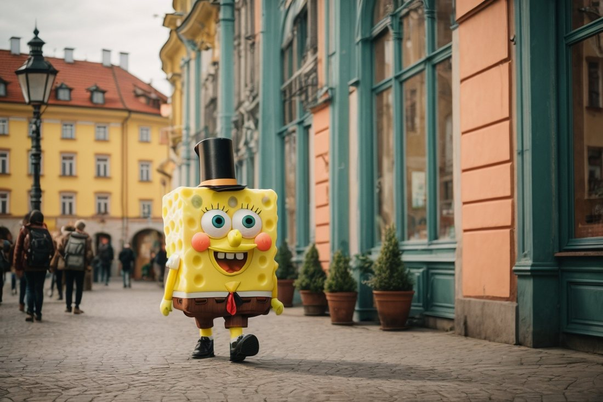
The show · scroll sideways for more →
Videos come from YouTube (Google) and load only when you press play. How we handle this
The experiment can be an inspiration both for computer scientists, but also for those passionate of culture and art, to consider new technologies, art and threats resulting from the development of artificial intelligence.
Our team
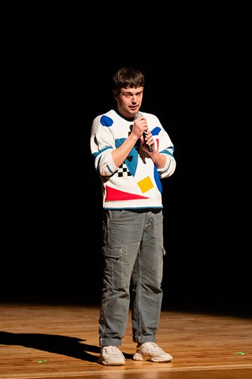
Patryk FicFacilitator & creative directorFacebook ↗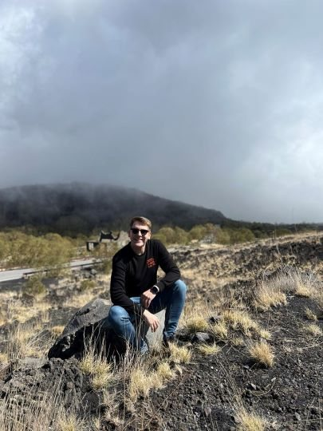
Sebastian RafalskiPresident of Patrz GlobalnieFacebook ↗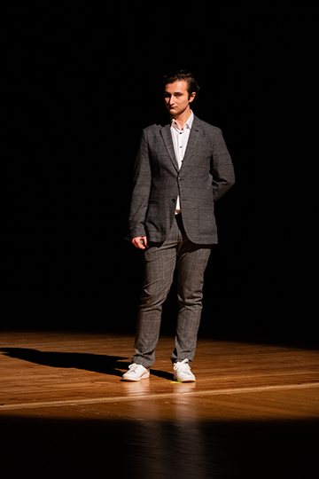
Darco MurjaAI & IT specialistFacebook ↗ LinkedIn ↗
Partners
How we used AI: materials → Art Meets AI 2.0 Back to all projects